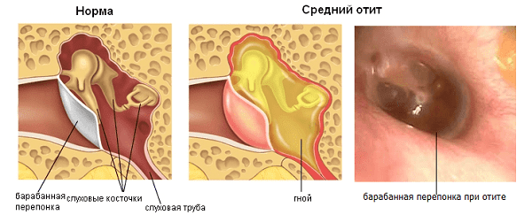
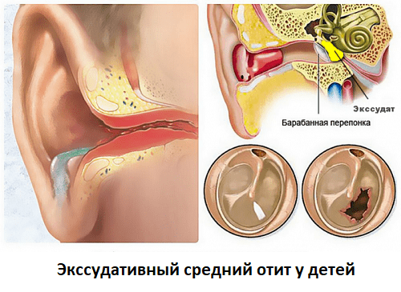
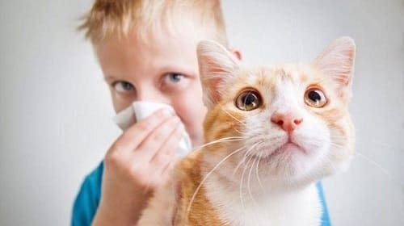
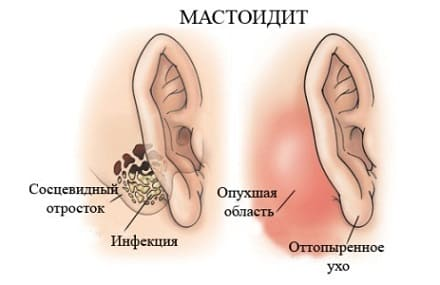

У вашего младенца в течение недели был насморк, и вдруг однажды он с криком проснулся среди ночи. На следующее утро вы везете его к врачу, и, конечно же, у него воспаление уха. Этот сценарий случается с каждым ребенком хотя бы однажды. Медицинский термин для ушной инфекции — средний отит, что означает «воспаление среднего уха». Слух вашего ребенка зависит от правильного взаимодействия барабанной перепонки и расположенных за ней структур среднего уха. Повторяющиеся инфекции могут повреждать барабанную перепонку, из-за чего она будет неправильно колебаться, передавая звук, поэтому пострадает слух. Поэтому важно быть бдительным при лечении ушных инфекций, особенно в первые годы жизни, когда идет развитие речи.
ПРИЗНАКИ И СИМПТОМЫ
С детьми старшего возраста легко определить, когда у них ушная инфекция — они жалуются на боль и замечают, что хуже слышат больным ухом. С младенцами и малышами сложнее. Вот признаки, которые вы можете отслеживать, чтобы принять решение о необходимости визита к врачу:
СОВЕТ ДОКТОРОВ СИРС: ПОДЦЕПИЛ УШНУЮ ИНФЕКЦИЮ? Усиливающиеся слизистые выделения (из глаз и носа) плюс все усиливающаяся раздражительность — подозревайте ушную инфекцию. |
ПРИЧИНЫ
Когда ребенок болеет ОРЗ (ОРВИ), вырабатывающаяся избыточная слизь становится резервуаром для развития бактерий, которые распространяются в нос, горло и пазухи носа. Бактерии и выделения попадают в евстахиеву трубу (узкая трубка, расположенная между носом и ухом) и в пространство среднего уха позади барабанной перепонки — происходит инфицирование. Слизь и гной накапливаются, вызывая покраснение, воспаление и выпуклость барабанной перепонки. Врач может увидеть это, осматривая ухо. Если давление на барабанную перепонку слишком сильное, она может порваться, после чего вы заметите выделение из слухового прохода слизи, наподобие той, что идет из носа.
Поскольку евстахиева труба у детей короткая, широкая и прямая, бактерии легко попадают в ухо при ОРВИ. По мере роста ребенка евстахиева труба удлиняется, становится уже и наклоняется под более острым углом. Это затрудняет попадание слизи и бактерий в среднее ухо. Именно благодаря этому большинство детей перерастают свою склонность к ушным инфекциям.
СОВЕТ ДОКТОРОВ СИРС: УШНАЯ БОЛЬ ПОСРЕДИ НОЧИ Хотя врачи и родители — это профессии, вынуждающие отказаться от сна ночью, все же нет особой необходимости в консультации врача, когда ваш ребенок проснулся с болью в ухе, если он не выглядит серьезно больным. Единственное лечение, которое может предложить врач в дополнение к уже предпринятым вами мерам, — это антибиотик, но это не облегчит боль, да и действовать начнет не ранее чем через 12 часов. Вышеописанных средств достаточно, чтобы ребенок спокойно дождался утра. |

Слизь или жидкость в среднем ухе не всегда инфицируются. Хронические аллергии или умеренный насморк могут способствовать накоплению безопасной жидкости — такое состояние называется серозным средним отитом.
ЧТО ВЫ МОЖЕТЕ СДЕЛАТЬ
Ожидая визита к врачу или в дополнение к его назначениям, попробуйте эти домашние средства:
ЧТО МОЖЕТ СДЕЛАТЬ ВРАЧ
Лечение ушной инфекции — совместная деятельность родителей и педиатра: вы успокаиваете боль, повышаете иммунитет своего ребенка, а врач лечит инфекцию.
«Всегда ли при ушной инфекции моему ребенку нужны антибиотики?» Не обязательно. Последние исследования в этой области показали, что многие инфекции среднего уха часто проходят без антибиотиков. При умеренных средних отитах Американская академия педиатрии рекомендует подход «ждать и наблюдать». В своей педиатрической практике мы основываемся на современных данных, действуя следующим образом.
Наблюдайте и ждите. Если у ребенка насморк и жидкость в среднем ухе, но нет лихорадки и его не беспокоит боль в ухе, мы вообще не используем антибиотики. Жидкость обычно самостоятельно уходит из среднего уха (см. методы самопомощи для очистки забитых евстахиевых труб) и антибиотики на этом этапе не нужны. «Наблюдайте» не означает ничего не предпринимать — а наблюдать за ребенком, отслеживая признаки того, что его состояние ухудшается. «Ждите» подразумевает, что врач не назначает антибиотики немедленно и вы можете вместо этого сосредоточиться на лечении натуральными средствами. Можно использовать антибактериальное средство для наружного применения — диоксидин (0,5%-ный или 1%-ный раствор).
Звоните врачу при ухудшении. Помните: жидкость, скопившаяся где угодно в организме, особенно в среднем ухе, становится питательной средой для бактерий. Если инфекция развивается, врач может перейти к плану Б: назначить антибиотики. Звоните врачу, если:
Ваш врач назначит антибиотик соответственно тяжести ушной инфекции. При умеренно выраженных проявлениях большинство врачей начинают со стандартного амоксициллина (розовый сироп). Если инфекция тяжелая и/или у вашего ребенка раньше отмечалась нечувствительность к амоксициллину, врач может назначить аугментин, представляющий собой комбинацию амоксициллина и клавулановой кислоты, которая эффективна против большинства микробов, устойчивых к амоксициллину. Если у вашего ребенка есть аллергия на производные пенициллина или эти антибиотики «первой линии» неэффективны, врач может использовать так называемые антибиотики «второй линии» — цефалоспорины. Длительность курса может колебаться от 5 до 10 дней в зависимости от вида антибиотика, тяжести инфекции, наличия у вашего ребенка сопутствующей инфекции дыхательных путей и носовых пазух, что обычно требует более длительного лечения. Помните, что антибиотик может начать действовать через 24 часа, так что продолжайте применять свои домашние обезболивающие и облегчающие состояние средства.
СОВЕТ ДОКТОРОВ СИРС: ВЕДИТЕ ДНЕВНИК В качестве вашей части сотрудничества с детским врачом очень важно вести точный дневник ушных инфекций вашего ребенка: как часто они случаются, насколько тяжело протекают, какое лечение наиболее эффективно. Эта информация жизненно важна, чтобы врач знал, когда ребенок нуждается в назначении антибиотика, какого именно и на какой срок. Например, если несколько записей в вашем дневнике гласят: «Последние две ОРВИ переросли в ушную инфекцию...» — врач может опустить стадию «наблюдать и выжидать» и сразу назначить антибиотик. |
Врач должен проверить уши после окончания лечения. Убедитесь, что ребенок полностью получил назначенный курс антибиотиков, даже если ему «стало лучше через 24 часа». Прерывание курса антибиотика чревато рецидивом заболевания. Не забудьте отвезти ребенка на контрольный осмотр примерно через неделю после окончания лечения. Врач должен осмотреть барабанную перепонку и проверить среднее ухо, чтобы убедиться, что инфекция полностью вылечена и вся жидкость исчезла. Иногда врач может воспользоваться специальным пневматическим отоскопом, чтобы проверить колебания барабанной перепонки. Хотя жидкость из среднего уха рассасывается в течение нескольких недель — это часто встречается и обычно безопасно, — но, если ее слишком много, и она задерживается там слишком долго, это может ограничить колебания барабанной перепонки, в результате чего нарушится слух. Кроме того, если жидкость задерживается больше, чем несколько месяцев, она превращается в липкий гель — состояние, называемое «экссудативный отит», — который, возможно, придется удалять ЛОР-врачу во время амбулаторной операции. Вот почему необходим контрольный осмотр. У вас может быть несколько записей, гласящих, что «такой-то антибиотик не работал» или что «такой-то антибиотик вызвал ужасную диарею». Эта информация будет полезна врачу при назначении антибиотика.

ПРОФИЛАКТИКА
Дети до года и дошкольники более склонны к развитию ушных инфекций по двум причинам: их иммунная система еще незрелая, а евстахиева труба короткая, широкая и идет горизонтально, что позволяет инфицированным выделениям легко попадать из носа и горла в среднее ухо. По мере того как ребенок растет, иммунитет развивается, а евстахиева труба становится длиннее, уже и приобретает более наклонных ход, что затрудняет попадание выделений в среднее ухо. Пока же попробуйте эти профилактические меры.
Как можно дольше кормите грудью. Младенцы, вскармливаемые грудью, реже болеют ушными инфекциями — считается, что благодаря иммунитету, обеспечиваемому материнским молоком.
Кормите из бутылочки в вертикальном положении. Если ваш ребенок склонен к ушным инфекциям, кормите его в вертикальном положении или хотя бы держа под углом не менее 30° и не менее 30 минут держите вертикально после кормления. Это не только не дает грудному молоку или смеси затекать в среднее ухо, но и помогает опорожнению желудка. Младенцы, склонные к рефлюксу, также более склонны к развитию ушных инфекций, так как часть желудочного содержимого может затечь в евстахиеву трубу и затем в среднее ухо.
Обеспечьте ребенку максимально возможное гипоаллергенное окружение. Аллергены, такие как домашняя и уличная пыль, табачный дым, перхоть животных, способствуют усилению выделений в носовых ходах и среднем ухе. Соблюдайте «безворсовый» режим в спальне ребенка, убрав оттуда чучела животных, домашних животных и другие предметы, покрытые ворсом. Так как перхоть животных часто вызывает аллергию, не допускайте домашних животных в спальню ребенка. Очищайте воздух с помощью НЕРА-фильтра. Пищевые аллергии, особенно на молоко и пшеницу, также могут способствовать накоплению жидкости в среднем ухе.
Не курите возле ребенка! Заболеваемость почти всеми болезнями, особенно аллергическими, астмой и ушными инфекциями, увеличивается, если ребенок подвергается воздействию табачного дыма. Дым раздражает слизистую носовых ходов ребенка и усиливает накопление жидкости в среднем ухе. Это явление окрестили «ухом курильщика».

Используйте «душ для носа» и паровые ингаляции. Чем лучше вы будете очищать нос, тем меньше вероятность, что выделения станут густыми и липкими и забьют евстахиевы трубы.
Раньше и энергичнее начинайте лечить насморк. Если у вашего ребенка уже были случаи, когда простуда с насморком перерастали в отит, при первых же признаках насморка включайте режим обеспечения-носового- пассажа с промываниями носа, паровыми ингаляциями и другими способами, чтобы сохранить носовые проходы чистыми. Если простуды у вашего ребенка ранее заканчивались отитом, врач может назначить антибиотик, не дожидаясь развития осложнения. Вы также можете для профилактики начать капать в ухо чесночное масло до того, как ребенок начнет жаловаться на боль в ухе.
СОВЕТ ДОКТОРОВ СИРС: СПЕЦИАЛИСТЫ АЛЬТЕРНАТИВНОЙ МЕДИЦИНЫ МОГУТ ПОМОЧЬ При хронических или повторяющихся ушных инфекциях могут помочь хиропрактики или остеопаты. Врачи-остеопаты обучаются манипулировать головой, шеей и туловищем, используя точные прикосновения и массаж, которые могут помочь улучшить отток жидкости из среднего уха через евстахиеву трубу. Лечение у хиропрактика может дать такой же результат. Мы обычно направляем наших маленьких пациентов с хроническими отитами к этим специалистам. |
Как можно реже используйте пустышку. Исследование, опубликованное в журнале «Педиатрия», показало наличие связи между частотой использования пустышки и частотой развития ушных инфекций. Хотя это чисто статистическая корреляция и причинно-следственные связи неизвестны, не исключено, что постоянное использование пустышки нарушает нормальную работу евстахиевой трубы.
Осмотрительно выбирайте детский сад. Хотя это не всегда осуществимо, но если есть возможность, то, оставив ребенка дома, вы уменьшаете его контакт с микробами и количество простуд и отитов. Попробуйте это хотя бы в течение холодного времени года.
Повышайте иммунитет своего ребенка.
ОСЛОЖНЕНИЯ
Хотя большинство отитов полностью излечиваются с помощью описанных выше методов, вот некоторые осложнения, о которых родители должны знать:
Перфорация барабанной перепонки. Случается, что избыточное давление из-за скопления жидкости в среднем ухе выдавливает ее через барабанную перепонку в наружный слуховой проход. Вы увидите отделяемое, вытекающее из уха ребенка. Иногда в нем может присутствовать кровь. Постарайтесь не дать термину «перфорация барабанной перепонки» напугать вас. Как только жидкость потечет через отверстие в мембране, давление и боль немедленно уменьшаются. Кстати, до появления антибиотиков врач прокалывал барабанную перепонку, чтобы облегчить боль и дать отток жидкости. Если появилось отделяемое из уха, врач может назначить ушные капли с антибиотиком в дополнение к оральному антибиотику. При последующих осмотрах врач будет проверять, как заживает отверстие в барабанной перепонке.
Потеря слуха и задержка речевого развития. Повторяющиеся отиты могут снизить слух вашего ребенка и вызвать задержку речевого развития, особенно если они происходят в первые годы жизни, важные для развития речи. Вот почему отиты надо тщательно лечить: не слишком агрессивно и не слишком большим количеством антибиотиков, но достаточно агрессивно, чтобы предотвратить потерю слуха.
Мастоидит. Инфекция из уха может распространиться в сосцевидный отросток затылочной кости, расположенный позади уха. Признаки этого редкого осложнения:
Если вы видите эти признаки мастоидита, немедленно обращайтесь за медицинской помощью.

СОВЕТ ДОКТОРОВ СИРС: ПООСТОРОЖНЕЕ С ОТДЕЛЯЕМЫМ Если вы видите, что из уха течет, не капайте в ухо масло или любые другие назначенные ушные капли, не проконсультировавшись с врачом. Неизвестно, можно ли их капать при перфорированной барабанной перепонке. |
Ушная индивидуальность. Постоянное скопление жидкости в среднем ухе доставляет ребенку постоянные неудобства. Вкупе со снижением слуха это может привести к тому, что мы называем «ушной индивидуальностью». Младенцы с повторяющимися отитами демонстрируют отклонения в поведении просто потому, что они плохо себя чувствуют или плохо слышат, и поэтому плохо себя ведут. Как только отит адекватно пролечен, родители замечают, что «мой малыш стал вести себя намного лучше».
МИРИНГОПЛАСТИКА
Она заключается в проведении разреза барабанной перепонки и введении в полость среднего уха трубочки. Это делается с целью облегчить отток гноя из среднего уха. Кроме того, благодаря такому дренажу гноя он не засыхает.
Если частота отитов у вашего ребенка увеличивается или они становятся тяжелее, ваш педиатр или ЛОР-врач могут порекомендовать мирингопластику. Вот что вам нужно знать об этой небольшой операции:
Кому она нужна? Хотя решение принимается индивидуально, вы и ваш врач можете рассмотреть эту возможность, если ваш ребенок:
Как выполняется мирингопластика? ЛОР-врач применяет легкое обезболивание и протыкает крошечное отверстие в барабанной перепонке, чтобы дать отток жидкости. Затем врач вставляет в это отверстие пластиковую трубочку размером с карандашный грифель. Эта амбулаторная операция занимает около 20 минут. Трубочки обычно остаются на месте 6— 12 месяцев, а потом самостоятельно выпадают, после чего отверстие заживает само по себе.
Зачем нужна мирингопластика? Иногда жидкость в среднем ухе (медики говорят «экссудат — или выпот — в среднем ухе») остается там надолго и становится густой и липкой, как клей, так что никакие лекарства и домашние средства не могут вывести ее из уха. Кроме того, если жидкость находится в ухе слишком долго, она может вызвать две проблемы: повреждение структур среднего уха и снижение слуха с последующей задержкой речи. Во время операции врач удаляет всю жидкость из среднего уха. Если она появляется снова, она просто вытекает через трубки. Таким образом, мирингопластика позволяет сохранить слух ребенка до тех пор, пока евстахиевы трубы не сформируются и не начнут функционировать как положено. Родители часто замечают, что слух и речь ребенка улучшаются в течение суток после операции.
Здоровье ребенка от докторов Сирс / Сирс У. и др.